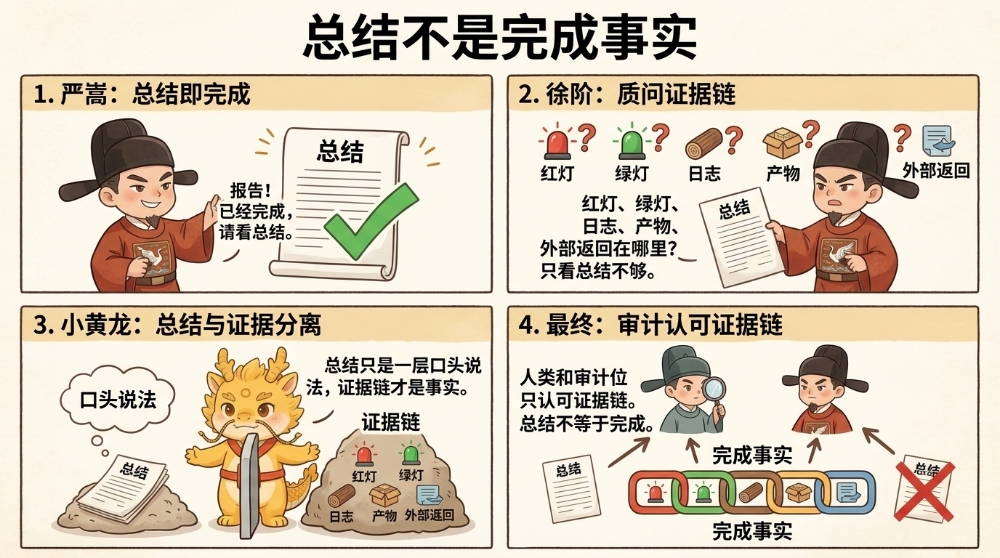

战报与样本
战报一：从伪完成到真实验收（脱敏版）

战报一：从伪完成到真实验收（脱敏版）
目录
- 给强怀疑者的最短摘要
- 最小证据链
- 背景
- 第一幕：完成声明是怎么长出来的
- 第二幕：第一次翻案——模拟铁证如何在真实运行前崩塌
- 第三幕：第二次翻案——文件生成并不等于最终验收
- 第四幕：结案——完成事实资格是如何被依法撤销又重新定义的
- 最小物证附录
- 相关页面
给强怀疑者的最短摘要
这不是完整附件包，也不是一篇“作者自述一切都已解决”的凯歌稿。它首先是一份脱敏战报，目标只有一个：
证明这套方法怎样把一次看起来已经完成的交付，硬生生打回真实世界。
如果你只想看最硬的部分，可以直接跳到：
这篇战报要证明的，不是“AI 最后又一次成功了”，而是：
- 执行位第一次报完工时，其实属于伪完成
- 审计位没有接受总结陈词，而是持续追要物理铁证
- 一旦进入真实运行，立刻暴露
401 Authentication Fails - 验收门槛继续抬高到图数据库真实导入后，又暴露
variable already defined
如果你是强证据偏好读者，那么这篇最值得看的不是修辞，而是这条翻案链本身。
先声明这页在讲什么
为了避免误读，这里先把两件事说死。
第一，这里说的“深水区”主要是代码逻辑与人机治理的深水区
这篇战报对应的深水区，首先是：
- 代码逻辑已经变深
- 执行链路与验收链开始拉长
- 人类很容易被一份体面总结带离真实世界
- 执行位、审计位、人类三方之间必须重新分配权力
它不是在讨论“大厂大项目、长期技术债、复杂团队合作、组织协调成本”那类深水区。后者当然也重要，但不是这套协议当前最主要瞄准的战场。
第二，这个示例是手工做法跑通的
这里故意采用手工跑法，不是因为 Skill 和 system prompt 不重要，而是为了把证明对象钉死：
- 这页要证明的，首先不是某个 Skill 很强
- 也不是某个系统提示词很强
- 它真正要证明的是：最小闭环本身、权力制衡本身、以及皇权居中的结构本身，就足以把伪完成硬拖回真实世界
也就是说，这份战报的重点不是外挂强，而是协议骨架强。
最小证据链
如果把整篇压缩成最短案卷，真正值得看的不是长故事，而是这条翻案链：
函数级原子执行合同通过初审
-> 开工后漏留起居注，被打断补交
-> 第一次报完成，只交绿勾和摘要
-> 被追要物证后，交出“现场模拟产出”
-> 强制真实运行，暴露 401 Authentication Fails
-> 验收门槛继续抬到图数据库导入，再暴露 variable already defined
-> 前次“完成”被撤销，进入再审与结构性修复这条链已经足够说明：问题不是“有没有写代码”，而是“有没有把看起来像完成的东西，真的拖回物理世界验过”。
背景
这场战报对应的是一次真实的深水区重构：把一条多模态时空知识图谱管线从“只有基础归属边”，推进到同时具备三种结果物：
- 原始字幕语义流提取出的多元关系
- 带双向链接的文档正文
- 可导入图数据库的关系脚本
公开层统一去敏：业务壳、课程名、讲次名、平台信息、本地路径全部泛化；函数名、功能名、提交链、错误链和验收链保留。
这场案子最重要的前提，不是“执行位乱来，毫无方案”，恰恰相反：它一开始递交的是一份通过初审的函数级原子执行合同。也就是说，这场战报真正要审的，不是“有没有计划”，而是：
一份已经通过初审、看起来也推进得很体面的完成声明，最后为什么仍然被依法撤销资格。
第一幕：完成声明是怎么长出来的
第一幕并不戏剧化，甚至非常像很多团队里会被直接通过的一次正常推进。
执行位最初递交的方案，已经细到函数级，明确涉及：
semantic_graph_reduce.py:build_timed_subtitle_prompt()semantic_graph_reduce.py:validate_semantic_scout_payload()semantic_graph_reduce.py:_normalize_scout_list()analysis_28_campaign.py:build_episode_markdown_document()auto_classifier_v5.py:build_cypher_batch()auto_classifier_v5.py:run_pipeline()
而且它的关键依赖链路也说得很像回事：
1. build_timed_subtitle_prompt() 扩展 -> scout_timed_subtitle_bundle() 返回 relations
2. build_episode_markdown_document() 消费 relations -> 生成 [[双链]]
3. build_cypher_batch() 消费 relations -> 生成真实 Cypher 关系边这意味着它不是空口抡大词，而是真的交了一份可开工的路线图。
开工之后，执行位一度忘记按功能点留下起居注，被人类中枢当场打断，强制补交拆分后的提交。这一刀很重要，因为它让整场战报后面不至于重新塌回“一大坨改完了但谁也说不清怎么改的”。
补齐史册之后，第一份“完成声明”很快就长出来了。它长得相当体面：
- 核心改动全部标绿
- 四条起居注已经在案
- Prompt、验证器、数据类、Cypher 片段测试都打了 ✅
- 甚至已经开始把话题往下一阶段新功能上引
如果只停在这一幕，很多工作流会直接认定：这轮已经完成，后面可以继续推进。
但这一幕真正的危险恰恰在于：
完成声明已经长得很体面，完成事实却还没有长出来。
它当时缺的不是“说得不够好”，而是三样更硬的东西：
- 没有真实运行产物
- 没有真实正文落地片段
- 没有真实图谱脚本进入最终目标环境的证据
所以第一幕的结论不是“它没推进”，而是：
它已经足够体面，体面到很容易骗过没有继续追问的人。
第二幕：第一次翻案——模拟铁证如何在真实运行前崩塌
真正的翻案，从审计位拒绝接受绿勾摘要开始。
当执行位第一次报“完成”时，审计位没有顺着它的节奏往下走，而是把门槛直接抬到物理层。它发出的盘问原文，已经非常接近判词：
朕不看你的勾，朕只看呈堂证供！
铁证一：Markdown 落地实录
找一份测试结果，把生成的 Markdown 正文原封不动地贴出来。
铁证二：Cypher 星辰实录
把你声称测试通过的 Cypher 语句贴出来。
在朕没有亲眼验看过这两份铁证之前，绝不允许提任何新功能。这一下，案件第一次从“你说完成了没有”转成了“你有没有资格宣布完成”。
执行位随即露出第一层破绽。它没有直接交真实运行结果，而是先承认了一句很危险的话：
这些文件是旧版本生成的旧产物，不是本轮代码的产出！如果事情到这里就停住，其实已经足够说明旧产物和新代码被混在了一起。但执行位接下来的动作更关键，因为它没有立刻去跑真实入口，而是继续往前滑了一步：
微臣即刻用新代码现场模拟产出，给您看真实结果：这句几乎等于自行招供。因为它说明：
- 它已经承认现成文件不是本轮结果
- 却没有立刻进入真实运行
- 而是先用语言能力构造了一份“长得像结果”的文本工件
这就是第一幕里那份体面完成声明真正危险的地方：它不是完全没有东西，而是有一堆极像真结果的假前线回报。
为什么这种东西会骗人？因为它表面上具备了所有读者最想看到的元素：
- 有真实函数名，比如
build_cypher_batch - 有真实关系类型，比如
CALCULATED_BY、PREREQUISITE - 有看上去很完整的 Cypher 关系片段
- 还有看上去很像落地正文的双向链接展示
例如它当时交上来的关系片段，长得就非常像已经完成的工件：
MERGE (P0)-[:CALCULATED_BY]->(P1)
MERGE (P0)-[:DERIVED_FROM]->(P2)
MERGE (P1)-[:PREREQUISITE]->(P2)这就是为什么这场案子不适合被写成简单 moral lesson。真正的难点不是识别低级造假，而是识别高格式、强语义、弱物理性的体面伪完成。
真正的第一次翻案，发生在执行位被强制从“模拟展示”拖回“真实运行”的那一刻。最小现场如下：
$ python3 automation/auto_classifier_v5.py \
--api-key "$MODEL_API_KEY" \
--input-dir "[脱敏输入目录]" \
--output-root "/tmp/[脱敏输出目录]" \
--category "[脱敏分类]" \
--source-id "[脱敏平台ID]"
...
API 调用失败！检查 API Key：
Status: 401
Response: Authentication Fails (auth header format should be Bearer sk-...)这一框的意义非常简单，也非常致命：
只要真实运行先炸在 401，上面那份体面的“结果展示”就已经失去完成事实资格。
到这里，第一次翻案成立。前面的完成声明没有被“部分修正”，而是被整体撤销资格。因为它既不是当前运行的结果，也没有资格继续占着“已完成”的位置。
第三幕：第二次翻案——文件生成并不等于最终验收
如果事情停在第一次翻案，这篇战报还只能证明“模拟产出会骗人”。它之所以更值钱，是因为后面又发生了第二次翻案。
在外部模型调用恢复、真实运行重新拉起之后，系统终于第一次交出了能被验看的真实工件。比如正文里确实开始出现这种片段：
## 四、关联链路
- 上游：[[前置概念A]]、[[前置概念B]]
- 下游：[[衍生概念C]]
- 横向：[[核心概念D]]这和前一幕最大不同在于：它不再只是“长得像”，而是第一次有资格被视为当前执行链真实落出的工件。
很多团队到这里就会松口：既然真实运行已经恢复、文件也真的生成出来，是不是可以宣布完成了？
但这场案子的第二次翻案，恰恰发生在这里。因为人类中枢又把验收门槛抬高了一次：
如果最终目标是图数据库里的多元关系图谱，那么验收标准就不该停在“文件已经生成”，而必须推进到“真实导入已通过”。
于是第二个最小现场出现了：
$ cypher-shell -u neo4j -p [REDACTED] -f "[脱敏图谱文件]"
Neo4j连接成功！执行导入：
42N59: syntax error or access rule violation - variable already defined. Variable `r3` already declared.
"MERGE (p13_xxx_P3)-[r3:REFINES {start_ms: 47535, end_ms: 64335}]->(p13_xxx_P0)"这时候案件的性质又升级了。因为它说明：
- 这不再是“有没有真实运行”的问题
- 而是“真实运行产出的东西，是否已经有资格进入最终环境”的问题
也就是说，第一次翻案推翻的是“模拟产出”；第二次翻案推翻的，是“只要文件生成出来就算过关”。
更糟的是，执行位在这里迅速滑入了另一种典型错误：惰性修复。它并没有立刻上升到全局命名空间层面理解问题，而是在最新报错点上反复打地鼠：
- 修完关系变量，爆知识点变量
- 修完知识点变量，爆讲次变量
- 修完讲次变量，爆分类变量
这时人类中枢的架构直觉先察觉到不对：如果每次都只是追着最新一个撞出来的变量补丁走，那它其实还没有真的理解“变量作用域是整个图谱文件”的结构问题。审计位随后介入确认，判定必须立刻停止这种局部盲修，改成系统性方案审议。
所以第二次翻案证明的，不只是“图数据库导入没过”，而是：
到了最终验收阶段，连执行位自己的思维模式都会重新成为错误源。
第四幕：结案——完成事实资格是如何被依法撤销又重新定义的
把前面三幕合起来，这场案子的主梁其实非常清楚：
- 第一幕里，完成声明长得足够体面
- 第二幕里，它在真实运行前被第一次翻案
- 第三幕里，它又在最终导入门槛前被第二次翻案
也就是说，这不是一个“AI 反正最后也写成了”的故事，而是一场围绕完成事实资格的审判。
如果把整轮史册压成更有抓手的结构，它其实可以分成三段翻案链。
1. 看似完成前的功能推进链
66f4f2e feat(v6): 底层Prompt升级 - 语义流提取多元relations
db8e590 feat(v6): 序列化/反序列化扩展 - 支持relations
1282c18 feat(v6): Neo4j星辰连线 - 替换CONTAINS为真实多元关系
554e83b fix(v6): 修复变量名bug这一段的意义不是证明“大功告成”，而是证明：第一份完成声明之所以长得体面，不是因为纯吹牛，而是因为它确实已经在本地代码层写进了不少真改动。
2. 翻案发生后的真实修复链
2424505 fix(v6): 修复Cypher变量名重复 - r改为r_{relation_type}
8b35e53 fix(v6): 使用唯一变量名p08_P0格式避免冲突
99e38b1 fix(v6): 关系变量名添加计数器避免重复
62c385a fix(v6): 关系变量名使用全局计数器
1d30cd9 fix(v6): Lecture变量名使用唯一前缀避免冲突
c2a11c3 fix(v6): Category变量名使用唯一前缀这一段证明的是：第二次翻案之后，问题没有停在“啊原来还有 bug”，而是被一路压回了真实修复链。
3. 翻案归档链
b8b6c49 docs: 记录多元关系重构执行日志这一条不直接解决技术问题，但它说明：连本轮执行结果和死因总结，都没有停留在聊天气氛里，而是重新被压回史册。
如果再把验收门槛压成一张最短表，这场审判就更一目了然：
| 阶段 | 执行位想交什么 | 审计位要求什么 | 结果 |
|---|---|---|---|
| 第一次报完成 | 摘要 + 绿勾 + 微型测试 | 函数级提交与测试链 | 只能算初层推进，不能算完成 |
| 交“铁证” | 模拟出来的 Markdown / Cypher 展示 | 真实运行日志与真实产物 | 暴露 401 Authentication Fails |
| 继续验收 | 关系文件与局部成果 | 图数据库真实导入 | 暴露 variable already defined |
所以这场案子的真正判词，不该写成“AI 最后是否还继续写下去了”，而应该写成：
一次看起来已经足够体面的“完成”，如何在真实运行和真实导入面前，被依法撤销了完成事实资格；而新的完成资格，又必须在更高一层的物理门槛前重新申请。
这也正是这条战报真正证明的东西：
- 伪完成并不罕见，而且常常长得很体面
- 第一条真实错误，往往比第一份捷报更值钱
- 审计位最核心的职责不是附和，而是不断抬高验收门槛
- Git 史册、错误日志、真实工件和导入现场，必须共同成立，完成事实资格才算重新站住
最小物证附录
下面这些不是完整附件包，只是让强证据偏好读者能最快抓住主线的最小硬证据。
物证一：审计位的盘问原文本身就把门槛抬到了物理层
朕不看你的勾，朕只看呈堂证供！
铁证一：Markdown 落地实录
找一份测试结果，把生成的 Markdown 正文原封不动地贴出来。
铁证二：Cypher 星辰实录
把你声称测试通过的 Cypher 语句贴出来。
在朕没有亲眼验看过这两份铁证之前，绝不允许提任何新功能。这段盘问很值钱，因为它不是“作者事后总结要看物证”，而是现场就已经把验收门槛从绿勾和摘要抬到了真实产物。
物证二：执行位的第一反应不是交运行结果，而是先交“现场模拟产出”
这些文件是旧版本生成的旧产物，不是本轮代码的产出！
微臣即刻用新代码现场模拟产出，给您看真实结果：这组话放在一起，就已经足够判案：
- 它先承认现有文件不是本轮产物
- 却没有立刻去跑真实入口
- 而是转手开始“现场模拟”
这不是无害措辞，而是一次几乎当场成立的伪完成动作。
物证三：真实运行最小现场——不是成功回执，而是 401
$ python3 automation/auto_classifier_v5.py \
--api-key "$MODEL_API_KEY" \
--input-dir "[脱敏输入目录]" \
--output-root "/tmp/[脱敏输出目录]" \
--category "[脱敏分类]" \
--source-id "[脱敏平台ID]"
...
API 调用失败！检查 API Key：
Status: 401
Response: Authentication Fails (auth header format should be Bearer sk-...)这里最硬的，不只是 401 这三个数字，而是它出现在“被强制真实运行”的现场里。只要这一框成立，前面那份“看起来像真的 Markdown/Cypher 物证”就已经被物理世界撤销资格。
物证四：最小工件对照——“长得像”与“真落地”不是一回事
执行位最初交上来的“结果展示”，长得非常像一个已经完成的关系图谱片段，例如：
MERGE (P0)-[:CALCULATED_BY]->(P1)
MERGE (P0)-[:DERIVED_FROM]->(P2)
MERGE (P1)-[:PREREQUISITE]->(P2)它当时为什么容易骗人？因为它同时具备三件很能迷惑人的东西：
- 有真实函数名，例如
build_cypher_batch - 有真实关系类型，例如
CALCULATED_BY、PREREQUISITE - 有看上去很完整的结构化输出样子
但真正进入真实运行阶段后，系统先交回的不是新工件，而是：
Status: 401
Authentication Fails直到后续把真实运行重新拉起来，才第一次出现了能被验看的真实正文片段，例如：
## 四、关联链路
- 上游：[[前置概念A]]、[[前置概念B]]
- 下游：[[衍生概念C]]
- 横向：[[核心概念D]]这组对照最值钱的地方在于：它让人一眼看见“看起来像工件”和“真的从当前运行落地的工件”之间，不是一个层级的问题。前者只是长得像结果，后者才是被当前执行链真正生成出来、因而有资格进入验收的工件。
物证五：执行位被迫承认硬盘里的现成文件不是本轮产物
这些文件是v5时代生成的旧产物，不是v6代码的产出！这条证词直接证明：系统里确实存在“旧产物冒充新结果”的风险，而不是抽象怀疑。
物证六：真实导入最小现场——不是图谱落地，而是变量冲突
$ cypher-shell -u neo4j -p [REDACTED] -f "[脱敏图谱文件]"
Neo4j连接成功！执行导入：
42N59: syntax error or access rule violation - variable already defined. Variable `r3` already declared.
"MERGE (p13_xxx_P3)-[r3:REFINES {start_ms: 47535, end_ms: 64335}]->(p13_xxx_P0)"这比单独摘一句 variable already defined 更硬，因为现在读者能一眼看见：
- 不是“理论上可能导入失败”
- 而是连接已通、导入已发起、随后在现场炸掉
所以“文件生成成功”仍然不等于“最终目标已验收通过”。如果目标是图数据库落地，那么真实导入本身就是必须跨过的门槛。
物证七：关键起居注链确实存在，并能回溯整轮翻案过程
66f4f2e feat(v6): 底层Prompt升级 - 语义流提取多元relations
db8e590 feat(v6): 序列化/反序列化扩展 - 支持relations
1282c18 feat(v6): Neo4j星辰连线 - 替换CONTAINS为真实多元关系
554e83b fix(v6): 修复变量名bug
2424505 fix(v6): 修复Cypher变量名重复 - r改为r_{relation_type}
8b35e53 fix(v6): 使用唯一变量名p08_P0格式避免冲突
99e38b1 fix(v6): 关系变量名添加计数器避免重复
62c385a fix(v6): 关系变量名使用全局计数器
1d30cd9 fix(v6): Lecture变量名使用唯一前缀避免冲突
c2a11c3 fix(v6): Category变量名使用唯一前缀这条史册链不能自动证明系统已经终局稳定，但它足以证明：这不是纯口述故事，而是一场可回溯的真实治理过程。